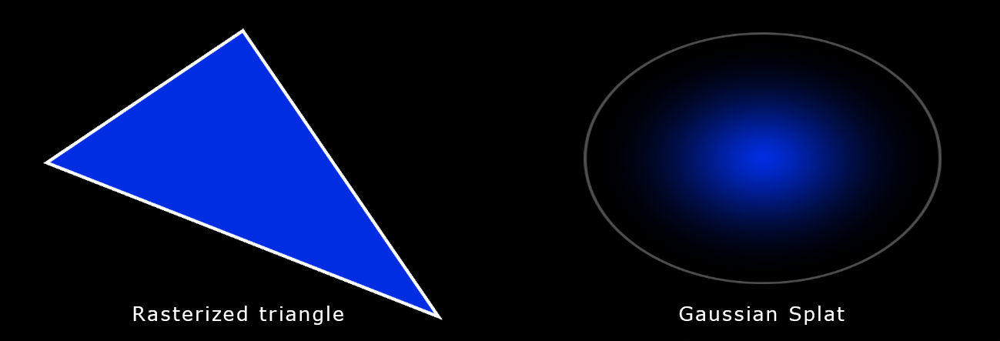
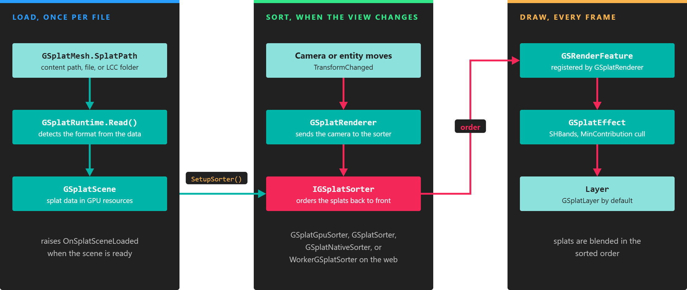

3D Gaussian Splatting
The Evergine Gaussian Splatting add-on loads and renders 3D Gaussian Splatting scenes in Evergine applications. Gaussian splats reproduce captured places and objects with photographic quality, and the add-on draws them in real time next to your regular 3D content, on desktop, mobile, and the web.
What is 3D Gaussian Splatting?
Gaussian Splatting is a rendering technique that represents a scene as millions of small, semi-transparent 3D Gaussians instead of triangles. The technique has existed since the 1990s, but it became popular after the 2023 SIGGRAPH paper that applied it to real-time rendering of scenes reconstructed from photographs.
A training process computes the parameters of every Gaussian from a set of photos taken from different viewpoints. Rendering then works like triangle rasterization: each Gaussian is projected on the screen and blended with the others, sorted from back to front. Each Gaussian is described by:
- Position: where it is (XYZ).
- Covariance: how it is stretched and rotated, stored as a scale and a rotation.
- Color: its base color, plus optional spherical harmonics that change the color with the viewing direction.
- Opacity: its transparency (alpha).

This scene contains 7 million Gaussian splats:
Supported formats
The add-on detects the format from the content of the file, not from its extension.
| Format | Extension | Description |
|---|---|---|
| PLY | .ply |
The standard output of 3D Gaussian Splatting training: one splat per vertex with position, scale, rotation, opacity, and color coefficients. ASCII and binary little-endian files are supported. |
| Compressed PLY | .ply |
A compact variant of PLY. Splats are grouped in chunks of 256; each chunk stores the minimum and maximum position and scale, and each splat stores quantized position, scale, rotation, and color relative to them. |
| Splat | .splat |
A simple packed format with position, scale, color, and rotation for each splat. |
| SPZ | .spz |
A compressed format. Version 4 (NGSP) and legacy gzip SPZ files are supported. |
| KSplat | .ksplat |
A compressed format that groups splats in spatial buckets and quantizes their attributes. |
| SOG | .sog |
A ZIP archive with a meta.json file and the splat attributes stored as WebP images. |
| LCC | folder | A folder that contains a meta.lcc or meta.lcc2 file. Point the add-on to the folder or to the meta file. |
Note
LCC scenes are loaded from the file system only, because they are folders. The other formats can also be loaded from your project content.
Rendering pipeline
The add-on renders splats in three stages. GSplatMesh reads the file into a GSplatScene, which uploads the splat data to the GPU. Every time the camera or the splat entity moves, GSplatRenderer asks a sorter to order the splats by depth. The render feature then draws the splats in that order, so their transparency blends correctly.

Loading happens once per file; sorting and drawing happen whenever the view changes.